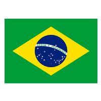
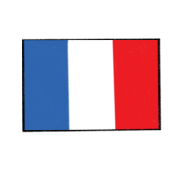

La Juve resuelve con oficio
La Juventus resuelve con oficio en Údine y sigue invicta en la Serie A.

¿Qué puede ofrecer Amorim al Manchester United?
El nuevo técnico de los Diablos Rojos llega con una filosofía de juego y con unos números
que le auguran un futuro prometedor

La RPD de Corea y España disputarán un tercer título histórico
La RPD de Corea y España saltan a la cancha con dos títulos de la Copa Mundial Femenina
Sub-17 en sus vitrinas, después del partido entre Estados Unidos e Inglaterra por el tercer
lugar.

Cuando Garrincha eliminó y enamoró a Chile
En un partido inolvidable, Brasil derrotó a Chile por marcador de 4-2, con goles de
Garrincha y Vava, para avanzar a la final de la Copa Mundial de 1962.

Todos los partidos de Messi en la Copa Mundial
La Pulga es el jugador con más encuentros en la historia del torneo, con 26. Superó
durante Catar 2022 al alemán Lothar Matthaus.
Conoce a nuestros jugadores destacados de la semana, quienes han dejado su huella en el terreno de juego.

Cristiano Ronaldo, Real Madrid, Portugal.
Robert Lewandowski, Bayern Múnich, Polonia.

Luka Modrić, Real Madrid, Croacia.
Conoce los mejores países en esta ultima decada según la FIFA

Argentina se mantiene en la cima de la tabla desde junio de 2023, tras ganar la Copa del Mundo en Catar 2022.
Brasil en 2002,regresó a la cima del ranking FIFA tras ganar la Copa Mundial.
Francia en mayo del 2001, tomó el mando del ranking FIFA.

Italia en 2007 cortó el largo reinado de Brasil y se posicionó en lo más alto del ranking FIFA.